Module 3 Activity Research
Weekly Activity
Yiyang Zhang
Project 3
Module 3
For Project 3 I am evolving the comfort lamp into a finished ambient object. After a group discussion we realized the lamp needs a physical scene instead of exposed electronics, so this module focuses on researching and prototyping a 3D-printed housing that frames the light, hides the Arduino hardware, and supports future ProtoPie interactions. Activity 1 documents my first round of research and the initial enclosure prototype.
Workshop 1
Workshop 1 was a bodystorming exercise where our team role-played a clinic visit to study doctor–patient communication. By acting as doctors, nurses, and patients, we tested how eye contact, body language, tone of voice, and digital tools (like using a phone for symptom checklists) affect trust and comfort. The photos document different scenarios from routine checkups to sudden “emergency” moments, helping us reflect on how interaction design can support clearer, calmer communication in real healthcare settings.

 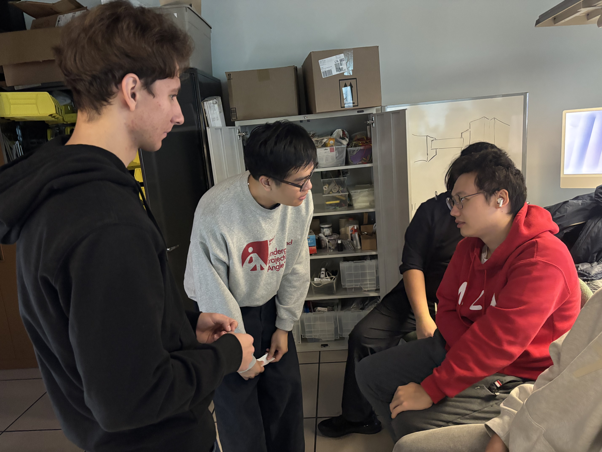
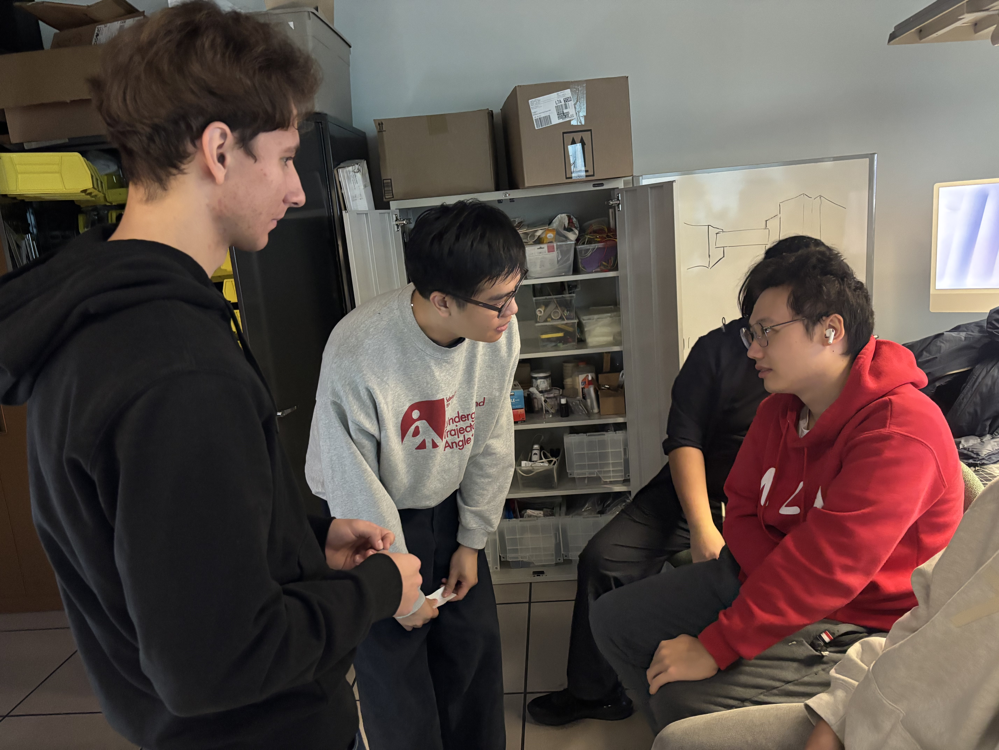
 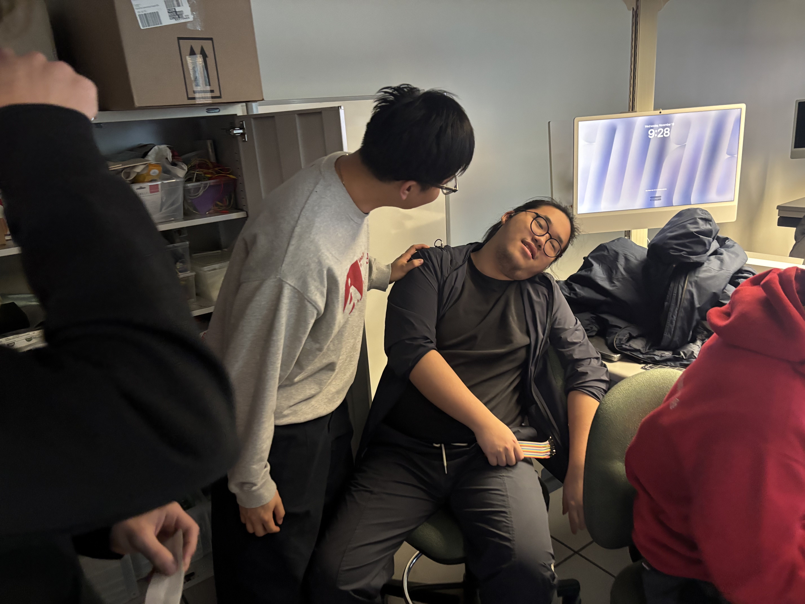
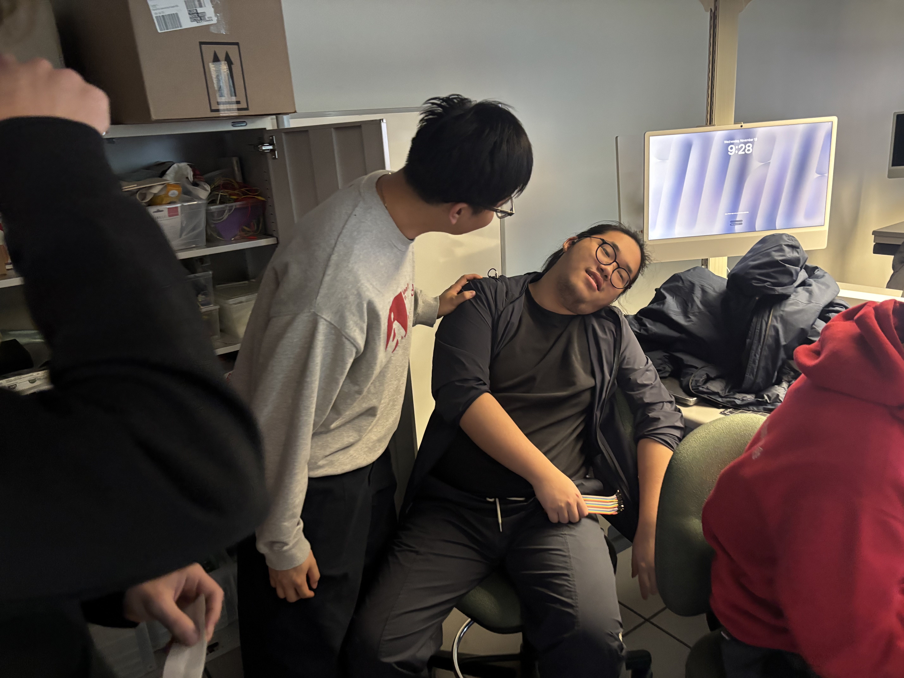
Workshop 2
Workshop 2 focused on building and testing the electronics for my comfort lamp. I extended the LED wiring, created a reliable connector for the NeoPixel strip, and tested the full circuit on a breadboard with the Arduino, DHT sensor, and LCD. After confirming that the logic and tiered colors worked, I started placing the components into the new staircase-and-arches housing to study how the light behaves inside the scene.


Activity 1: Enclosure Design & Material Research
In Activity 1 I focused on the physical form of the comfort lamp. Based on our group discussion that an ambient lamp should live inside a scene, I researched architectural models, selected a staircase/arch design from Thingiverse, and modified it to fit the Arduino, DHT sensor, and RGB LEDs. The images below show the process from reference model to 3D print and first physical prototype.


Activity 2: Electronics & Lighting Integration Tests
In Activity 2 I focused on testing the electronics inside the new 3D-printed housing. I soldered and extended the RGB LED ring, verified the comfort-lamp logic on the breadboard, then installed everything into the architectural scene to check brightness, colour tiers, and how the light behaves in the final enclosure.

 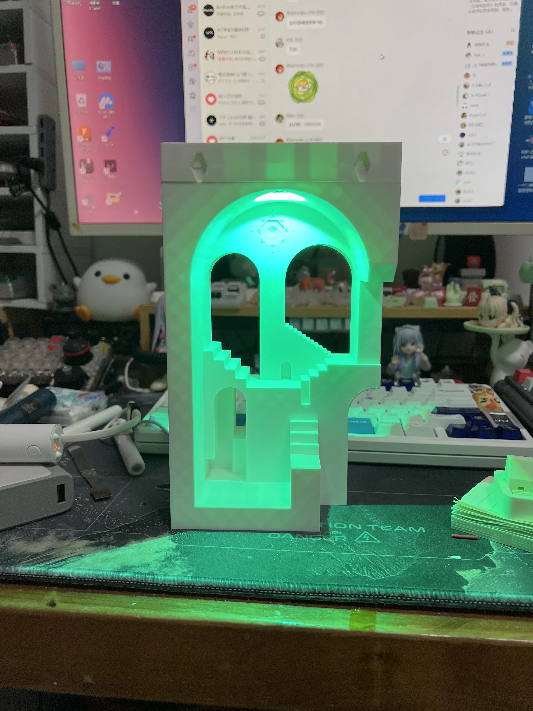
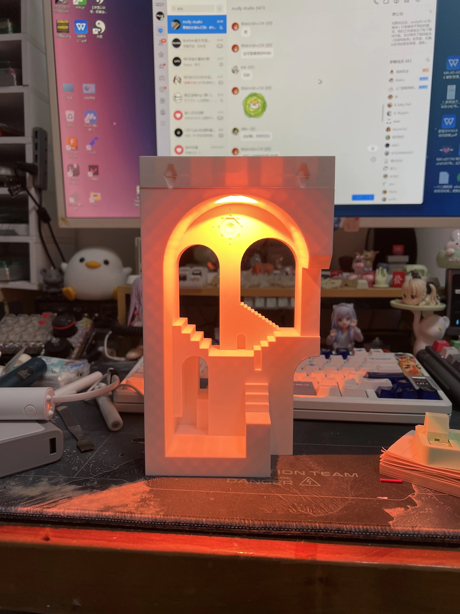
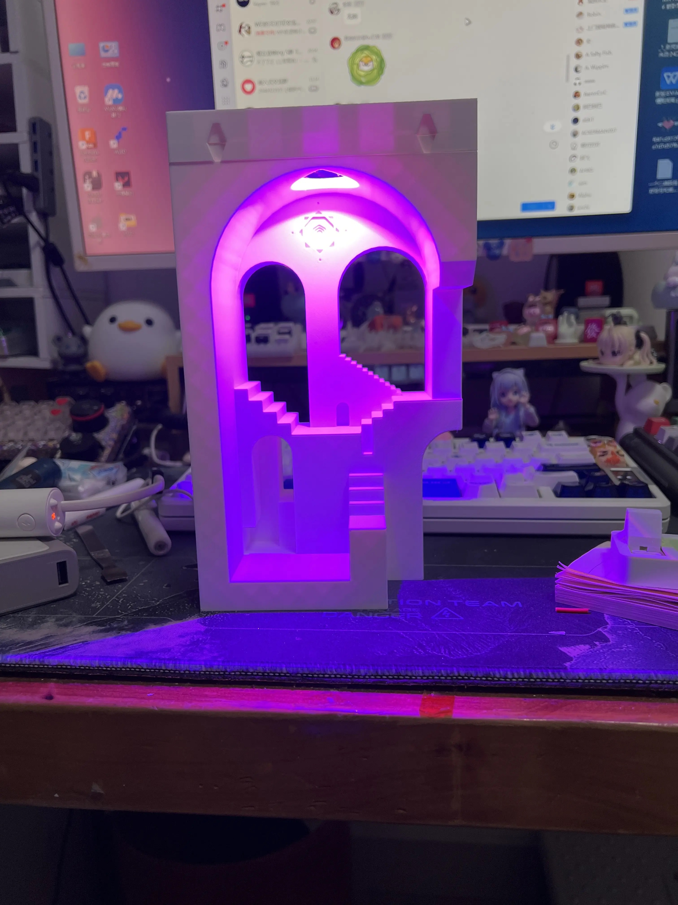
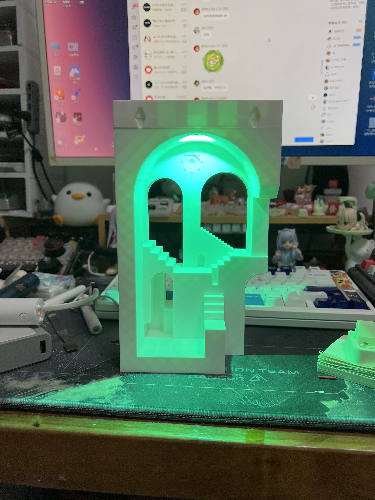
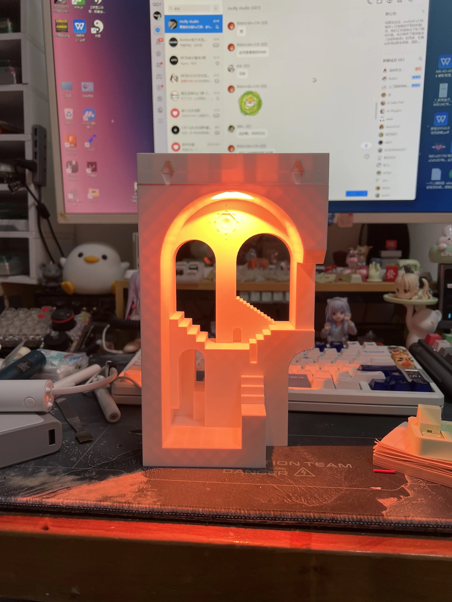
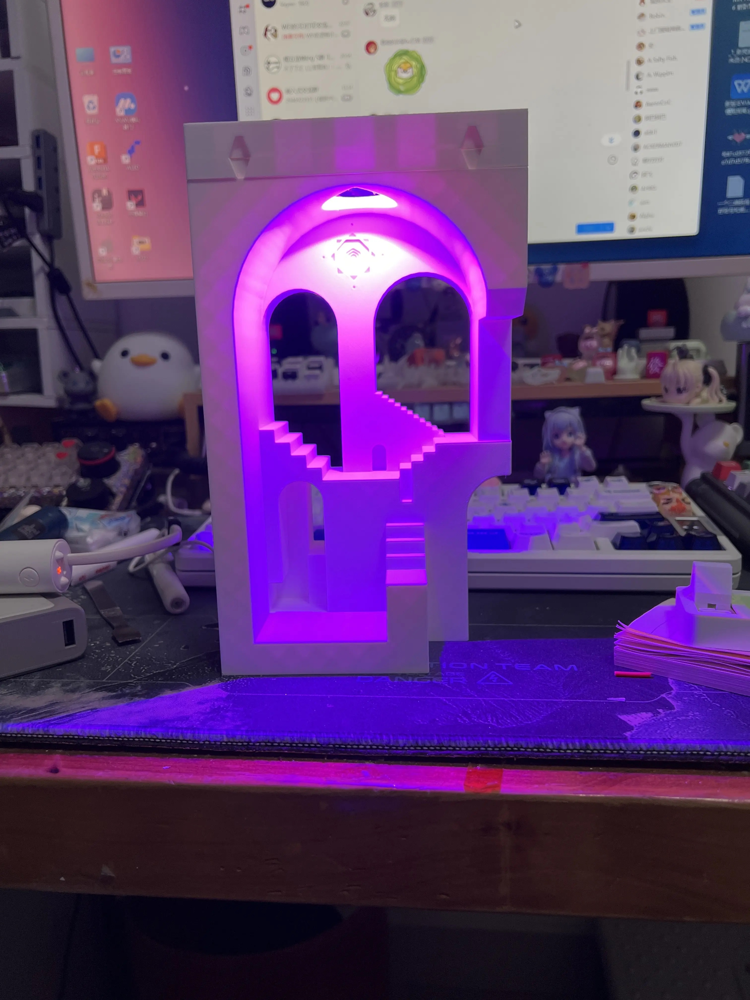
Additional Research 1
For this additional research I explored alternative sensing and interaction options for the comfort lamp. I removed the LCD module to simplify the circuit, added a light sensor so the lamp can react to ambient brightness, and tested a latching touch switch after our team discussion that “a lamp should always have a clear on/off control.” I then cleaned up the wiring, updated the code, and verified that the full system runs reliably with the new sensors and switch.

Additional Research 2
In this second round of additional research I focused on how the full comfort-lamp circuit fits and behaves around the 3D-printed enclosure. I first tested the latching touch switch and sensors on the breadboard, then brought the housing into the setup to check cable length, mounting positions and light spill. Finally, I ran a series of colour-tier tests (cool, neutral and hot states) with the enclosure in place to see how the LEDs wash across the stairs and arches and to confirm that the physical scene still makes the state changes easy to read.


 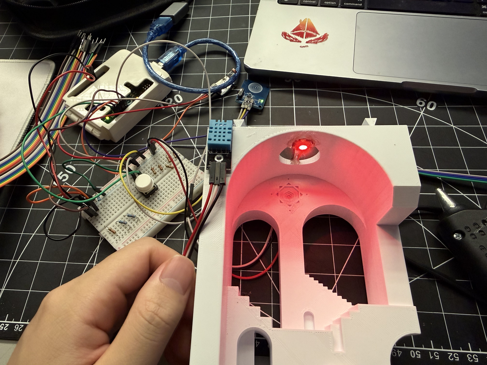
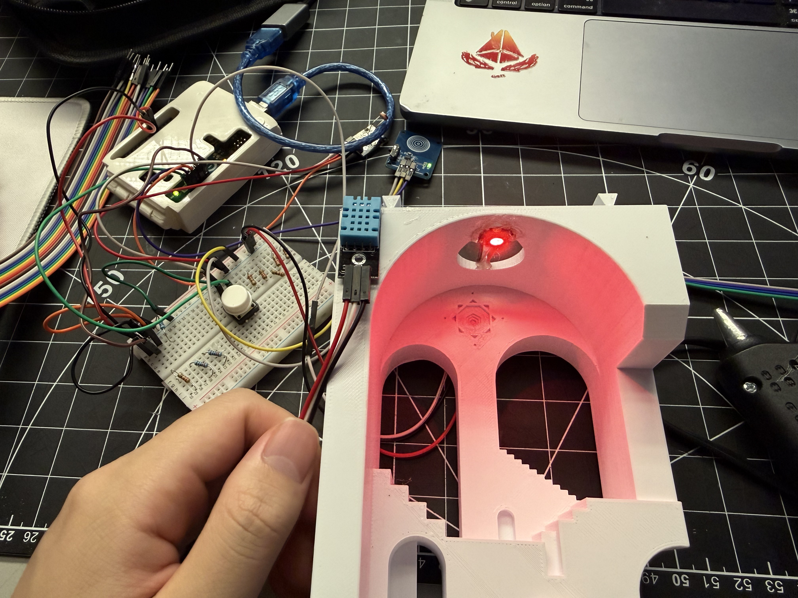
Project 3
Project 3 Final Prototype
The final prototype turns my comfort lamp into a small architectural ambient scene. The 3D-printed staircase and arch are still driven by the tiered comfort-lamp logic, while temperature, humidity, and light level are read by sensors mounted on the side. A latching touch switch gives the lamp a clear physical on/off control, and my teammate’s ProtoPie mobile UI now connects to the Arduino to show the live sensor data and modes that used to be on the LCD, as well as send commands back to the lamp. The finished object works together with the phone interface: the phone handles detailed information and controls, while the lamp itself communicates through colour and glow as a calm atmospheric display.


Powered by w3.css